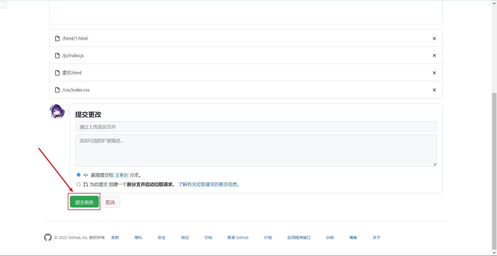
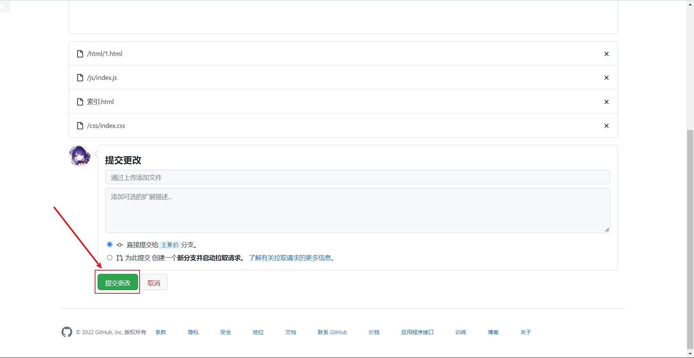

GitHub 部署静态网页
1、点击新建仓库
2、创建仓库
例如我的 GitHub 名称为 cxyqiyue，则我的仓库名命名为：cxyqiyue.github.io，其他仓库名都不可部署静态网页。
3、仓库中创建文件夹
1、每个 GitHub 账户都可部署多个项目的静态网页，所以每个项目都单独创建文件夹分类管理就很有必要.
2、只能部署静态网页，项目中可有多个 html 网页
4、创建文件夹
/ 是用于创建文件夹的，且文件夹下必须有文件才可创建成功
5、上传文件
 

6、删除之前创建的无用文件
7、访问静态网页
静态网页网址：https://cxyqiyue.github.io/Text6/index.html
仓库地址：https://github.com/cxyqiyue/cxyqiyue.github.io